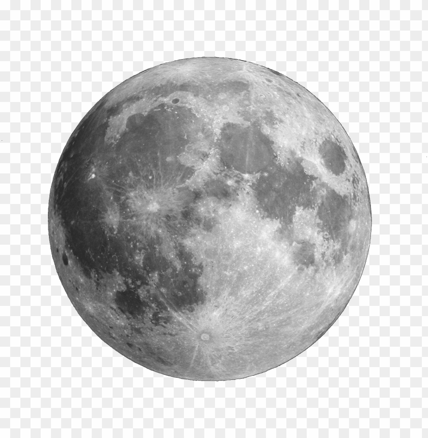

Fancy Avatar Demo
Below is the example of a fancy avatar that you can zoom in and out with hovering. Try placing your mouse on it

Below is the code that you will need to accomplish this task
html:
Here you just write out your code for an image, there is no need to specify class or id like this:
img src = "images/img1.png" alt="a random avatar picture"
Below is the code that you will need for CSS which is the backbone to this entire animation
Css:
img {
--s: 280px;
/* image size */
--b: 5px;
/* border thickness */
--c: #C02942;
/* border color */
--f: 1;
/* initial scale */
width: var(--s);
aspect-ratio: 1;
padding-top: calc(var(--s)/5);
cursor: pointer;
border-radius: 0 0 999px 999px;
--_g: 50%/calc(100%/var(--f)) 100% no-repeat content-box;
--_o: calc((1/var(--f) - 1)*var(--s)/2 - var(--b));
outline: var(--b) solid var(--c);
outline-offset: var(--_o);
background: radial-gradient( circle closest-side, #ECD078 calc(99% - var(--b)), var(--c) calc
(100% - var(--b)) 99%, #0000) var(--_g);
-webkit-mask: linear-gradient(#000 0 0) no-repeat 50% calc(1px - var(--_o)) / calc(100%/var(--f) - 2*var(--b) - 2px) 50%, radial-gradient(circle closest-side, #000 99%, #0000) var(--_g);
transform: scale(var(--f));
transition: .5s;
}
img:hover {
--f: 1.35;
/* hover scale */
}
body {
margin: 0;
min-height: 100vh;
display: grid;
place-content: center;
background: #E0E4CC;
}